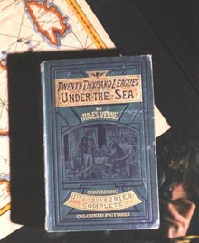
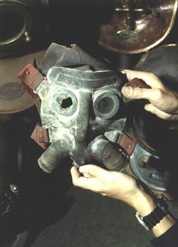

|
|
EARLY AUTONOMOUS - REG VALLINTINE
The history of autonomous diving or diving without lines to the surface is more recent on the whole. Although for hundreds of years people toyed with the idea of taking bags of air down underwater and breathing from them, one wonders if the people that tried it ever survived because you can’t breathe air at atmospheric pressure deep down underwater.
Probably the first successful autonomous apparatus can be dated to 1865 when two improbable Frenchmen, Rouquayrol and Denayrouze (a French mining engineer and a naval officer), produced their equipment in compressed air.
BENOÎT ROUQUAYROL (1826-1875)
AUGUSTE DENAYROUZE (1837-1883)
They produced this so that it could be used from the surface on a line, the same as the helmet, but also independently for a short time with a tank on the back. The reason it was a short time was because they couldn’t get cylinders in those days that pumped to a pressure more than 420 pounds per square inch. So it wouldn’t have lasted very long. It had a primitive demand valve that they had to operate by hand, but the equipment was used successfully by sponge divers in the south of France. It was also picked up by Jules Verne when he wrote 20,000 Leagues Under the Sea and used in illustrations in that book.
Unlike the original drawings, the first feature film of the story depicted standard dress divers using an oxygen rebreather system.
20,000 Leagues Under the Sea (Universal Pictures, 1916)

Jules Verne had forseen with uncanny vision the arrival of the submarine. By the time the film was released unrestricted submarine warfare in the Atlantic was making almost daily headlines.Underwater filming was achieved here for the first time in a feature film using a 30 foot long flexible tube large enough for a man to climb down to a tiny observation chamber at the bottom. John Williamson developed the system in 1913 from his father’s invention for deep sea salvage work.
KEN BROWN FOR WILLIAMSON
Wandering down a narrow alley in Norfolk, Virginia one evening, with ships and the sea visible at the end, Williamson had a strange vision:
“Long mysterious shadows filled the spaces between the ancient buildings looming ghostly against the glow of the setting sun. Silence reigned. The place seemed utterly deserted and forgotten. Above crooked roofs and sagging chimneys was a fathomless green sky, and a strange sensation of standing on the bottom of the sea among the ruins of some sunken city came to me. Standing there in this weird half-light of a dying day, I visualised these cities once peopled by humans and now haunts of creatures of the sea. What astounding pictures they would present if photographed!”
REG VALLINTINE - WILLIAMSON/20,000 LEAGUES UNDER THE SEA
Williamson’s filming of sharks at Nassau in the Bahamas during 1914 was the first time the tigers of the deep had been caught on film in the world. The feat was repeated for 20,000 Leagues Under the Sea which had its première at Chicago’s Studebaker Theatre on 9th October 1916.
EARLY AUTONOMOUS - REG VALLINTINE

In 1878 Henry Fleuss, an Englishman in spite of his name, produced the first autonomous apparatus using pure oxygen, described by Sir Robert Davis in his book and manual Deep Diving and Submarine Operations.HENRY FLEUSS (1851-1933)
What they didn’t know in those days was that you can’t use pure oxygen deeper than about ten metres because it becomes a poison. It was first used by a famous helmet diver, Alexander Lambert, when the Severn Tunnel flooded.
ALEXANDER LAMBERT (C.1837-1892)
It was considered that it was impossible to go down 60 feet, down a shaft, and then along into a tunnel underwater with the heavy helmet and so they suggested that he used the new oxygen apparatus.
1880
The great man said, “I’ll give her a go”, went 60 feet down the shaft, into the oxygen poisoning zone, walked 200 feet into the tunnel, tried to close the door, was unsuccessful, came out nearly dead with oxygen poisoning. He then called for his trusty helmet and his weights and walked into the tunnel and closed the door. One of the great diving exploits.
|
|